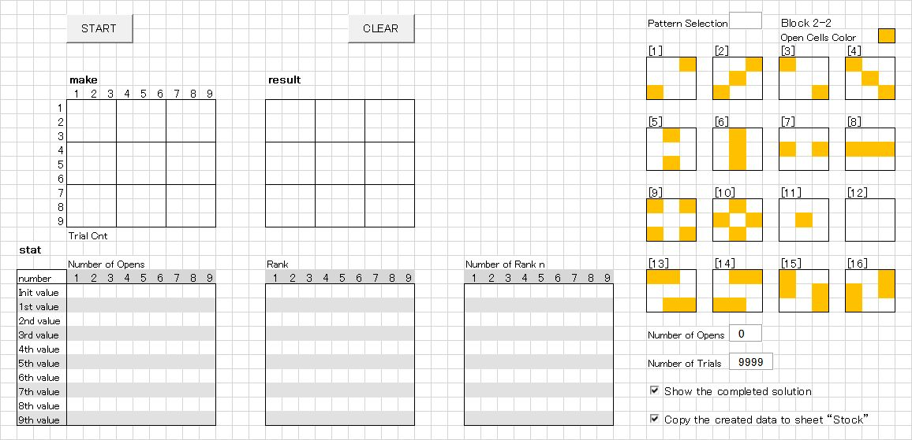
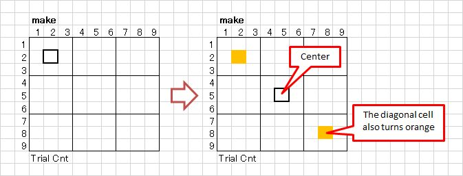

"Sudoku Puzzle Generator Tool == Another Method ==" User's Manual
The previously released "Sudoku Puzzle Generator" (hereafter abbreviated as Sudoku Tool) created puzzles by first generating a completed solution (all 9×9 cells filled), then making as many blanks as possible. For details, please see suudoku_02_doc_en. [Note1]
Using this method, puzzles with 23 or more open cells could be generated. However, since the open-cell patterns were chosen randomly, it was not possible to create puzzles with a user-wished pattern.

[Note1]
Please also refer to "Sudoku Puzzle Generator Tool Update".
Link:
suudoku_03_doc_en
Notes on using this tool
- Unauthorized redistribution of this tool is strictly prohibited.
-
If you are considering improving or modifying the logic,
please contact me and I will send you the source code.
If you succeed in achieving 22 or 21 opens through modifications, I'd be very happy to hear from you—hopefully you can also share the modified logic.
Install
Unzip z.suudoku_04_en.zip. Once unzipped, the "z.suudoku_04_en" folder will appear. All necessary data is stored in "z.suudoku_04_en". Move the "z.suudoku_04_en" folder to a suitable location.
Uninstall
Please delete the "z.suudoku_04_en" folder. The deletion is now complete.
Start
Double-click z.suudoku_04_en (or z.suudoku_04_en.xlsm if the extension is displayed) in the "z.suudoku_04_en" folder. The Sudoku puzzle creation tool will start.
This another method allows you to create puzzles with freely defined patterns.
The following explains the steps for puzzle creation:
-
Open "z.suudoku_04.xlsm" from Explorer.

-
The procedure from creating a pattern to generating a puzzle is explained below.
-
In the [make] area, fill in the open cells by coloring them orange. Clicking a cell will turn that cell and its diagonal counterpart orange.

-
Continue creating the pattern you have in mind.
If you want to remove a cell, click its diagonal counterpart and the orange color will be cleared.
-
An example of a created pattern is shown below.

Press the START button to begin puzzle generation.
-
When puzzle generation succeeds, the following screen will appear:

You will see that the numbers to be opened have been filled in the orange cells. If the two checkboxes in the lower-right corner of the screen is checked, the solution will be displayed, and the generated puzzle will be copied to the [Stock] sheet.
-
Press the [CLEAR] button to return to the initial display screen.

-
About the number of open cells:
Interesting patterns can be generated with around 28–32 open cells, and such puzzles can also be solved without undue difficulty. From my debugging tests, I have confirmed that puzzles can be generated with 25 or more open cells.